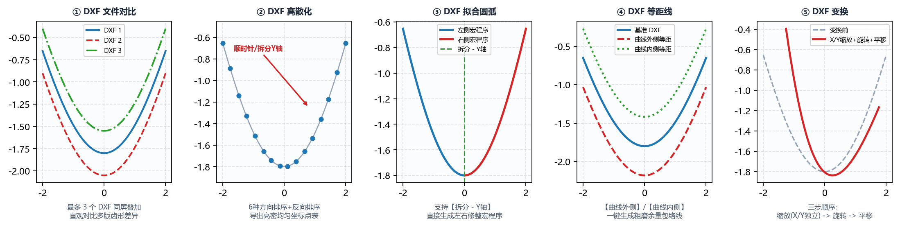

7.1 DXF 处理（五大工具）
工具箱 -> DXF 处理 提供 5 个免 CAD 专业前处理工具，适合将外部样条曲线、非标准坐标图档清洗并转换成符合 IGD 要求（Y = 0 对齐中径）的标准轮廓。

1. DXF 文件对比
- 参数：
DXF 文件 1（必填）、DXF 文件 2（必填）、DXF 文件 3（选填）、保存文件； - 功能：点击
生成对比 DXF将多条曲线按独立图层与颜色合并叠加并同屏展示。
2. DXF 离散化
- 参数：
DXF 文件地址&最终曲线点密度（默认500）；曲线方向（6 种策略）：自动识别、顺时针 - X轴+、逆时针 - X轴+、升序 - X轴、降序 - X轴、拆分 - Y轴；反向排序：勾选后首尾反转点列方向；
- 输出：点击
生成离散化数据，同目录生成*-discretization.dxf与均匀有序点云文本。
3. DXF 拟合圆弧
将高密度离散点或线切割不支持的 SPLINE 转换为纯相切 ARC + LINE DXF：
- 参数：
DXF 文件地址、曲线方向、反向排序、G3 ⇆ G2；拟合误差：单位为0.1 μm（输入1=0.1 μm，10=1.0 μm，默认1）；
- 拟合与输出特点：
- 单段圆弧圆心角自动限制在 ≤ 150° 并输出首尾平滑连续的
ARC实体； - 右侧画布以多色独立分段图例展示
*_arcs.dxf中各条圆弧与直线实体； - 自动去除重复采样点并统计真实最大误差与平均误差，同时生成
*_arcs.dxf、*_arcs.html、*_arcs.txt与*_arcs_program.txt加工程序段。
- 单段圆弧圆心角自动限制在 ≤ 150° 并输出首尾平滑连续的
4. DXF 等距线
- 参数：
DXF 文件地址、等距宽度（mm，偏置距离或余量）、等距方向（曲线外侧/曲线内侧）； - 功能：点击
生成等距线自动沿法向生成等距包络线并裁剪内凹自交环，输出*_equidistant.dxf。
5. DXF 变换
将圆心在 (0, 0) 的外CAD零件图一键调整到 Y = 0 对齐中径：
- 参数：
DXF 文件地址；缩放比例+缩放基准：支持独立的X:与Y:轴向缩放比例（默认均为1.0）及缩放中心(X:, Y:)；旋转角度 (顺时针+)+旋转基准(X:/Y:)；平移距离(X:/Y:)：例如分度圆半径为45 mm且原点在圆心的齿轮/花键图，在Y:填-45即可精准将分度圆移至Y = 0；
- 输出：点击
生成变换 DXF，导出*_transform.dxf与双曲线对照*_transform.html。